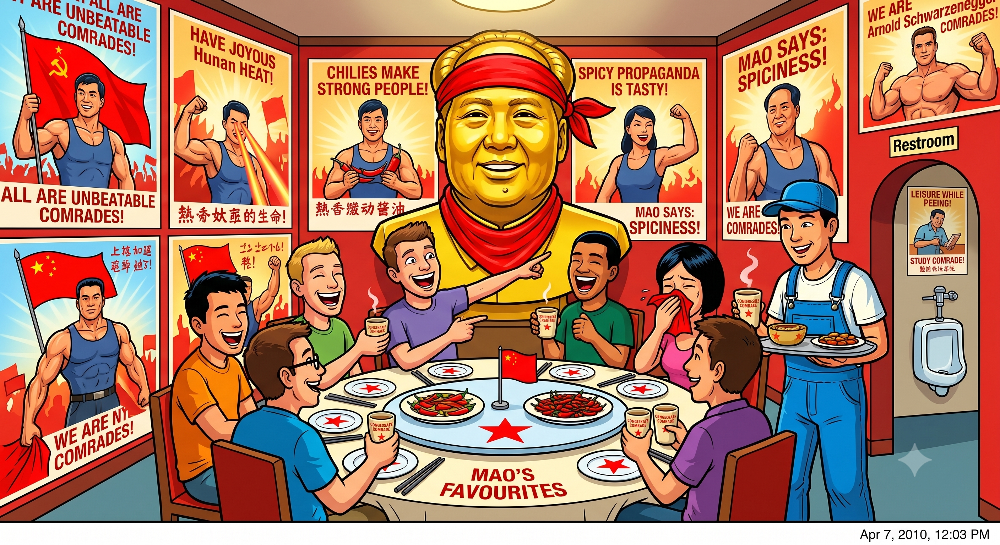

Eitan Goes to Maoland
Originally written April 2010 • Uploaded to Facebook on Apr 7, 2010, 12:03 PM

Last night was my roommate's birthday. As part of the joyous occasion, he invited me out with a group of his friends to enjoy some authentic Hunan cuisine. Hunan food is widely reputed to be the spiciest culinary style in China, so I spent the afternoon mentally preparing myself for the unexpected. As it turned out, I wasn't even remotely expecting what we encountered.
Outside the establishment, conveniently nestled in one of the bustling commercial shopping districts of Nanjing, we were greeted by blinding neon lights and sweeping red banners covered in Chinese characters I couldn't read. This is a common baseline experience for me here. Yet, the real performance began the literal moment we crossed the threshold. Towering over the entryway was a massive, golden bust of Chairman Mao, sporting a bright red bandana knotted around his neck. Imposing and surreal, I initially wrote it off as a simple kitschy formality.
But the moment we navigated around the giant golden icon, we found ourselves in a dining room completely plastered in vintage propaganda posters. Every inch of wall space depicted hard-working Chinese citizens at play, at work, and at leisure—all rendered in that classical, muscular, superhero artistic fashion. To complete the ultimate communist allure, our party was directed to a private dining room dominated by a mural of Mao conversing with a diverse group of ethnic minorities. Every individual in the painting was exceptionally tall, beaming with a radiant smile, and built like Arnold Schwarzenegger. Then again, so was Mao.
We sat down and immediately noticed that our drinking vessels were heavy iron cups coated in a beautiful, cream-colored ceramic enamel. "The People's Cups," I called them. When our waiter arrived to log our table's order, I noticed he was outfitted in thick blue factory overalls. A quick glance around the dining floor confirmed that the entire waitstaff wore the exact same industrial uniform. Opening the menu revealed specific sections highlighted with bold red stars, identifying them explicitly as Mao’s personal favorites. We ordered a spread, and the plates were exceptionally flavorful, though surprisingly lacking the absolute fire I had braced myself to endure.
Following the meal, I took a quick trip to the restroom, where the thematic dedication continued completely uninterrupted. Mounted directly in front of the urinals were scaled-down propaganda posters, perfectly positioned to be read while taking a leak. When I reached into the dispenser to blow my nose, I discovered the tissue paper was dyed a vibrant, brilliant red. Alright, by that point, the structural subtext was hitting me loud and clear.
As we settled the bill and stepped back out onto the street, a friend of mine who reads the characters mentioned that most of the text on the walls prominently featured the phrase *tongzhi* or "comrade." He explained that in the old revolutionary days, addressing someone as your comrade was standard, if not legally compulsory. I walked away laughing hysterically, however, when he added the ultimate contemporary twist: in modern Chinese slang, the word "comrade" has been completely co-opted as the definitive term for gay people in contemporary society.